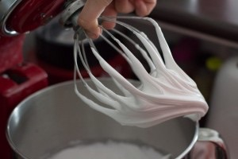
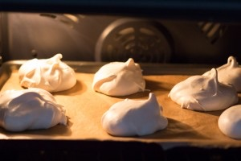

Eton mess

Dans cet article je vous propose une recette traditionnelle anglaise puisqu’il s’agit de la recette de l‘eton mess.
Un eton mess ça n’a rien de bien compliqué et c’est « le » dessert que je me devais de partager avec vous. Ce dessert d’outre manche ressemble beaucoup à une pavlova et c’est bien pour ça que j’en raffole et que vous allez aussi sûrement adorer. Je ne sais pas vous, mais moi dernièrement j’enchaine les week-end prolongés (oui j’ai trooop de chance^^) et ça, ça fait du bien. Sauf que je n’ai rien fait de particulier à part profiter des quelques rayons de soleil voulant bien se montrer (ah si j’ai planté des fraises aussi!!). De toute façon, moi je n’ai pas besoin de grand chose. Un peu de soleil, du temps pour faire la sieste et un bon dessert me suffisent (et un bon plat aussi^^) et dimanche dernier c’était un eton mess qu’il me fallait. De la crème chantilly au mascarpone, des fraises bien parfumées, de la meringue sont les ingrédients incontournables et traditionnels pour faire un eton mess sauf que moi j’y ai rajouté un peu de pistache!! Je pense que l’on est beaucoup en ce moment à servir des fraises avec de la chantilly en dessert mais très honnêtement avec deux minutes de préparation de plus on a un délicieux dessert, parfait pour recevoir 🙂 Bref, je vous laisse avec la recette, dommage que je ne puisse pas vous faire goûter au travers de l’écran… Il ne vous reste plus qu’à essayer…
Ingrédients
- Blanc d'oeuf à temp ambiante - 3
- Sucre fin ou sucre glace - 160g
- Fraises - 500g
- Jus de citron - 3 càs
- Cassonnade - 1 càs
- Crème fleurette entière - 400ml
- Mascarpone - 3 càs
- Sucre glace - 4 càs
- Pistaches - une grosse poignée
Instructions
- Préchauffer le four à 120°
- Fouetter les blancs en neige
- Quand vos blancs sont souples, ajouter le sucre petit à petit tout en continuant de battre Dans les ingrédients j'ai précisé qu'il fallait du sucre extra fin. Si vous n'en avez pas, mixez votre sucre afin de l'affiner. C'est ce que je fais à chaque fois et ça marche très bien, sinon utilisez du sucre glace
- Continuer de battre jusqu'à l'obtention d'un jolie meringue brillante (vous devez observer la formation d'un bec d'oiseau) Compter 5 bonnes minutes
- A l'aide d'une poche à douille ou d'une cuillère à soupe, former des meringues et déposez les sur une plaque à pâtisserie recouverte de papier sulfurisé
- Enfourner dans le four chaud pendant 60 minutes
- A la sortie du four laisser refroidir
- Couper les fraises en morceaux
- Faites les mariner au frais avec le jus de citron et le sucre pendant 20 minutes
- Verser la crème et le mascarpone dans le bol de votre robot
- Monter votre crème en chantilly au mascarpone
- Ajouter le sucre glace
- Mélanger les fraises avec la chantilly au mascarpone
- Au fond d'un verre (ou d'une verrine) déposer de ce mélange
- Par dessus, ajouter de la meringue écrasée grossièrement et quelques pistaches écrasées
- Recouvrir de crème et ainsi de suite jusqu'en haut du verre
- Saupoudrer de quelques pistaches écrasées
- Placer au frais jusqu'au moment de servir


Les tips de la communauté
Dessert simple, gourmand et élégant très apprécié. L'ajout de pistaches est une bonne idée. Fraises et meringue avec crème créent un joli contraste. Quelques retours sur la gestion de la meringue (qui ramollit).
Astuces
- Dessert très facile à réaliser - parfait pour brunch élégant
- Fraises, meringue et crème font un accord parfait
- Pistaches ajoutent une touche gourmande supplémentaire
- Crème fraîche légère et agréable en bouche
- Photos du blog font vraiment envie
Variantes suggérées
- Faire sans meringue si préféré
- Utiliser des meringues maison
- Assembler au dernier moment pour éviter que la meringue ramollit
- Couper meringue en gros morceaux plutôt que petits
Ajustements signalés
- La meringue ramollit au frigo après 1h - assembler au dernier moment ou utiliser de gros morceaux